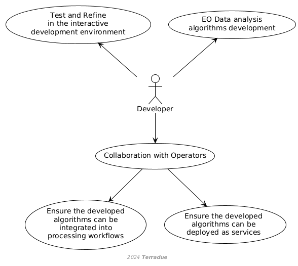

D1 · CopernicusLAC Centre Specification and Performance Requirements · Capítulo 2.4
Service Developer
Service Developer: desarrolla los algoritmos que alimentan las aplicaciones web de servicio, los prueba en el entorno de desarrollo y coordina con Operadores su despliegue.
pp. 10–111 fig.
Service Developers are responsible for creating and implementing algorithms for data processing. They can also be external to the platform development and operations team and their primary activities involve:
- Developing algorithms to process and analyse EO data delivered in specific service web applications, developed in the activities of a parallel project, provide essential EO-based information co-designed with stakeholders,
- Using the interactive development environment to test and refine code within the platform.
- Collaborating with Operators to ensure that the developed algorithms can be integrated into processing workflows and deployed as services.
